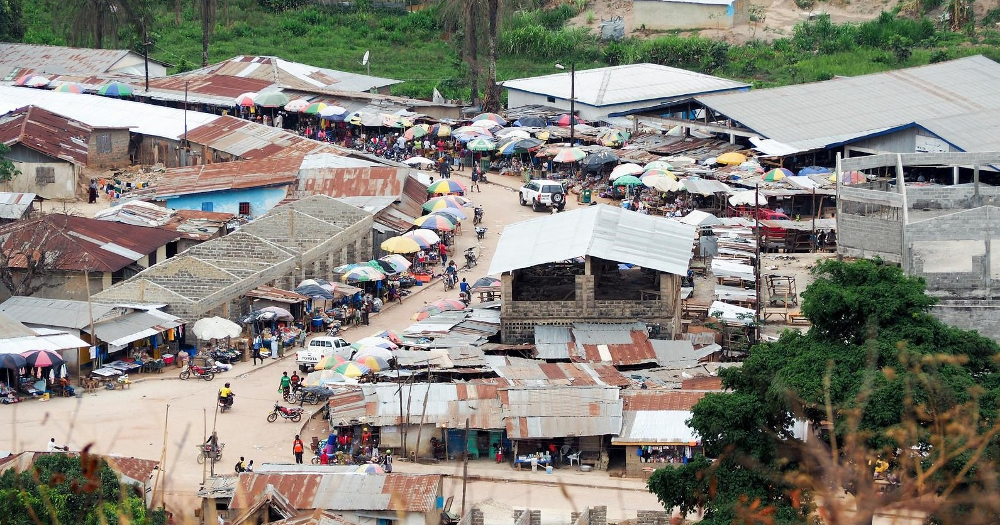

Goal 1 - No Poverty
Download page as PDFEnd poverty in all its forms everywhere
“Extreme poverty rates have fallen by more than half since 1990. While this is a remarkable achievement, one-in-five people in developing regions still live on less than $1.90 a day. Millions more make little more than this daily amount and are at risk of slipping back into extreme poverty.”

Poverty elimination projects to map low income (often slum) areas can support humanitarian and development programming. Particularly, mapping access to financial services and monitoring areas with low employment rates is fundamental to enabling those living in poverty to become more economically stable and to improve employability and education initiatives.
Additionally, while property boundaries are not imported into OpenStreetMap directly, putting villages and household footprints on a map is often the first step in giving communities a voice in land rights. “Geospatial information is critical in helping people claim their property rights. OSM allows for a flexible database schema and detailed historical information on how and when data originated. Both of these traits are particularly helpful in property rights, which are essentially a social contract between people about their land (versus solely between a person and the land they inhabit without accounting for their neighbors, community, society, etc.).”[1]
What has been done?
Mapping Financial Inclusion in Uganda: In order to increase digital financial inclusion, HOT mapped access to financial services in Uganda, allowing providers to analyze gaps in coverage. Access to digital financial services is fundamental to enabling struggling people to become more economically stable, prosperous, and resilient. These services – payments, credit, savings and insurance offered through mobile phones or other technology – are reaching millions of people around the world who had not previously been included in the financial system.
Map Kibera: The World Bank has partnered with Map Kibera to aid regional counties to engage citizens in an ongoing participatory budgeting process for development initiatives. The main purpose of this project is to use citizen-generated data to ensure that development projects within the counties meet the needs of the people.
What else could be mapped?
- Mapping basic services including education, water points, sanitation, and electricity. See Goals 4, 6, and 7 respectively, for examples and data models.
- Work with communities and governments to add collectively agreed upon administrative boundaries to the map.
- Work with rural communities to map underrepresented villages.
- Map commercial activity to understand economic needs and opportunities.
- Survey households for land ownership status.
OSM Data Model
1. Commercial activity
| Category | Key | Value | Description/notes |
|---|---|---|---|
| All commercial points of interest | name | Business name | |
| noname | yes | Use if business has no name | |
| opening_hours | Example: “Mo-Su 08:00-22:00”, “24/7”, “Mo-Fr 08:30-20:00; Sa,Su 08:00-15:00” | Hours of operation | |
| Financial Services / Mobile Money | amenity | mobile_money_agent, bank, banking_agent, atm, credit_institution, microfinance_bank, microfinance, sacco, bureau_de_change, money_transfer | Type of financial service, required |
| network | Airtel Money, Africell Money, MTN Mobile Money, UTL M-Sente, SMART Mobile Money, Vodacom M-Pesa, Safaricom M-Pesa | For mobile money agents, network(s) serviced | |
| Businesses | amenity | bar, cafe, car_wash, cinema, community_centre, fast_food, fuel, gym, pub, restaurant | For amenity & service oriented businesses |
| shop | alcohol, art, bakery, beauty, beverages, bicycle, books, butcher, car, car_parts, car_repair,charcoal, chemist, clothes, convenience, copyshop, cosmetics, electronics, food, furniture, greengrocer, hairdresser, houseware, jewelry, kiosk, mobile_phone, pastry, shoes, stationary, supermarket, tailor, yes | For retail oriented businesses | |
| Markets | amenity | marketplace | Required for all marketplaces |
| marketplace:type | agricultural, clothes, mixed | Types of products sold at marketplace |
2. Boundaries and places
| Category | Key | Value | Description/notes |
|---|---|---|---|
| Administrative boundaries | boundary | administrative | Designates an area as an administrative area |
| admin_level | <1 to 10> | Indicates the level of an administrative boundary according to country specific guides | |
| addr:* | addr: to be followed by the administrative designation (i.e. addr:district, addr:village) | ||
| name | Official or most commonly used name of administrative area | ||
| Places (Villages, towns, cities) | place | city, suburb, town, village, hamlet, |
Place type, generally based on population size |
| name | Official or most commonly used name of the place | ||
| alt_name | Unofficial or secondary name of the place | ||
| population | Official or estimated population size | ||
| source | Source of location and population information such as survey or official documentation |
[1] Omidyar Network: https://www.omidyar.com/blog/how-map-can-change-world-state-map-us-2015-conference-emphasizes-role-geospatial-data-property